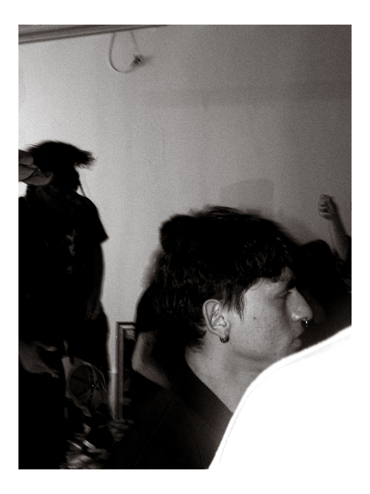
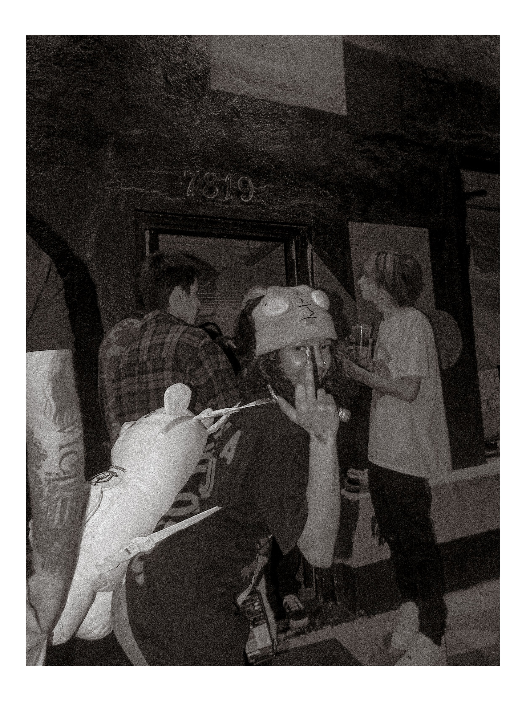
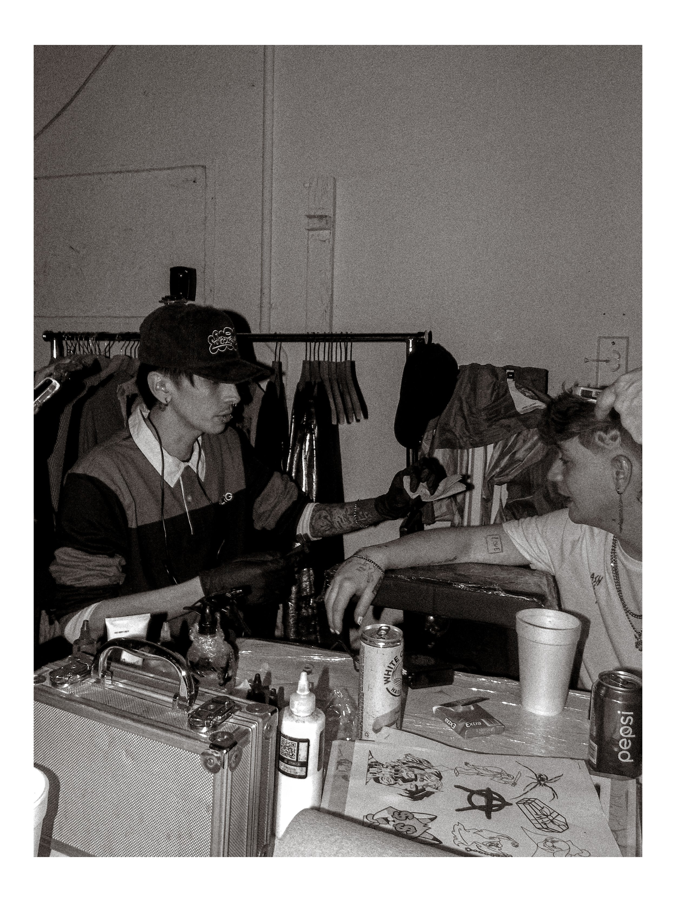

Collection 02
A place remembers.
Fragments of environment and architecture gathered as evidence—quiet frames about how people pass through a place and what they leave behind.




Collection 02
Fragments of environment and architecture gathered as evidence—quiet frames about how people pass through a place and what they leave behind.


